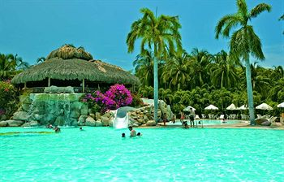

Por que ir a playa?

Irse a la playa antes era un sinónimo de respiro, de vacaciones, de lujo y de desconexión. Sin embargo el turismo crece de forma masiva en las playas, ya sean del Atlántico, del Pacífico o del Índico.
Para huir de todo y de todos debería haber unos cuantos metros de océano por medio entre nuestro destino y las grandes urbes. Por ejemplo una isla, sí, es sin duda la mejor opción para asegurarse unas vacaciones de verdad, o simplemente una escapada romántica, más íntima en conexión con la naturaleza.
Un destino podria ser Las Playas del Parque Nacional Tayrona en Colombia,
Este paraíso se encuentra ubicado en la costa norte colombiana, sobre el Mar Caribe, a 34 kilómetros de Santa Marta. Si lo que usted desea es desconectarse de la rutina y del estrés que ésta trae consigo, entonces tenga por seguro que las playas de este Parque Natural son una excelente opción para reencontrarse consigo mismo gracias a la conexión que podrá tener con la naturaleza.
Dentro de este fantasioso lugar usted podrá encontrar gran diversidad de playas casi vírgenes de arenas doradas, aguas cristalinas con un oleaje suave y una selva espesa que rodea el paisaje haciendo de este un paraje poco convencional.
Por otra parte cabe anotar que la administración del Parque Natural Tayrona regula diariamente el ingreso y salida de turistas; por ello la seguridad hace de éste el destino ideal para cualquier plan vacacional familiar, romántico o de amigos.

Perfil del Autor
Hola! Soy Heiner y me considero un curioso y creativo buscador de nuevos territorios donde expandir mis fronteras. Y esta curiosidad me ha llevado a diferentes partes de mi pais y me ha enseñado diversas habilidades en una de mis pasiones; viajay y conocer. Gracias a mi pasión por los retos y a mi sed de no quedarme quito, tuve la oportunidad de hoy compartir contigo un poco de quien soy.